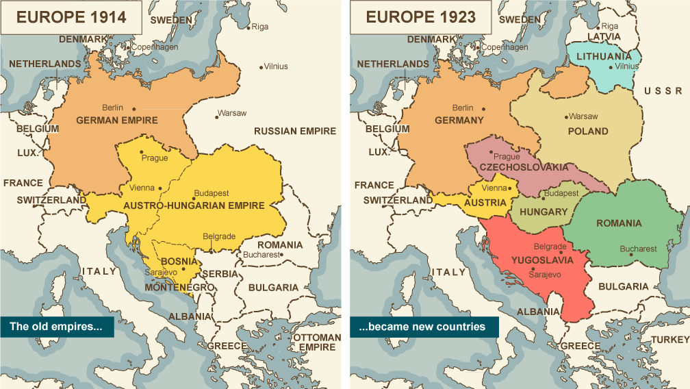

Mapa Európy
Ríše padajú a mapy sa menia. Na obrázku môžeme vidieť ako sa zmenila mapa Európy zásluhou prvej svetovej vojny. Najdôležitejšou zmenou pre nás ako Slovákov bolo samozrejme vytvorenie samostatného Česko-Slovenska. Na mape môžeme taktiež vidieť zánik Rakúsko-Uhorska, Ruskej ríše, Nemeckej ríše, avšakaj vznik Juhoslávie. Podobne môžeme vidieť obrovskú zmenu mapy Európy za veľmi krátky čas.
